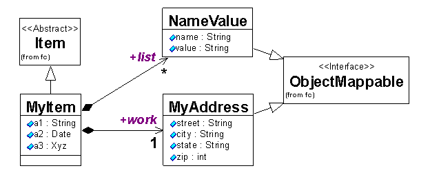

The persistence layer is responsible for storing and retrieving objects in the Windchill Method Server to and from a persistent datastore such as a database.
The architecture is implemented using several packages. The dataservice package provides the abstraction for a datastore. For example, the unique implementation differences between Oracle and SQLServer are encapsulated in the classes, wt.dataservice.Oracle and wt.dataservice.SQLServer, respectively. The main supported APIs for accessing persistence operations are defined and implemented in the fc package. To formulate queries to retrieve persistent data, the query package is used to build query specifications for modeled classes and attributes and the type query package is used to build query specifications for types and global/standard attributes.
The persistence layer implements an object to relational mapping based on Java annotations that are specified directly in the source code. These annotations are used at compile time to generate serialized introspection information files that can be accessed via introspection APIs. A Data Definition Language (DDL) creation tool is used for generating DDL scripts that create the tables, index, and other schema objects that must exist in the relational database. The DDL scripts must be run prior to the application server start up (usually at install time). The same introspection files and APIs are used at application server runtime to generate Data Manipulation Language (DML) that is executed using JDBC APIs. The basic persistence operations create, read, update, and delete are implemented using DML INSERT, SELECT, UPDATE, and DELETE, respectively.
The mapping is based on the following rules:
The following UML diagram shows an example mapping.

The class MyItem maps directly to the MyItem table because it extends wt.fc.Item which implements the Persistable interface. The super class attributes would include all field of wt.fc.PersistInfo since these are aggregated by Persistable. The MyItem attributes a1, a2, and a3 are all mapped to columns. The attribute a3 is mapped to a Blob column type since it is not a simple type with a SQL column type representation. The work attribute is an aggregate of the MyAddress class so the street, city, state, and zip attributes are all mapped to individual columns. The list attribute can contain multiple values so it is mapped to a Blob column type also.
Persistent relationships can be implemented between Persistable objects using a wt.fc.BinaryLink. A BinaryLink implements Persistable and aggregates references to two objects, role A and role B. It can be used to implement relationships with any cardinality. The wt.fc.ForeignKeyLink is a specialization of BinaryLink. This class implements the association by aggregating the role B reference in the role A object's table. It can only be used when the cardinality for the role B object is zero or one.
Objects that are stored persistently have an identifier that is unique within the database. More than one copy of an object can exist in memory and each can be manipulated independently. Any changes to in memory objects are only reflected in the persistent state when an insert, update or delete is executed and the associated transaction is committed. The persistent attribute values are mapped to the associated database columns and the appropriate database command is executed. Likewise, when a query is executed, the result column values are mapped to the attribute values in the object. When multiple copies of a persistent object with the same unique identifier are updated or deleted, the persistence layer ensures that the first operation is not overwritten by subsequent operations. This implemented using an update count mechanism. For an operation to successfully complete, the in memory object's update count must match the state in the database. Otherwise, a wt.pom.ObjectIsStaleException is thrown. To avoid this type of exception, the object should be locked when it is updated by concurrent threads or refreshed from the database when it is updated by the same thread.
The main methods used to exist in the wt.fc.StandardPersistenceManager. This is a standard Windchill service that can be accessed through the service interface and helpers, wt.fc.PersistenceManager, wt.fc.PersistenceManagerSvr, wt.fc.PersistenceHelper, and wt.fc.PersistenceServerHelper. The StandardPersistenceManager forwards calls to the pom layer and specifically to the wt.pom.PersistentObjectManager. The pom layer is also responsible for handling database connections and transactions. Database connections are implicitly obtained as needed when processing operations. The wt.pom.POMHandler implements a connection pool to balance database connection resources with multiple, concurrent requests.
Database transactions are implemented via wt.pom.Transaction. A transaction enables multiple operations to be committed as a single unit of work. The Transaction object is designed to be used in Java try/finally blocks and supports logical nesting. Each local Transaction can be committed or rolled back. If a rollback method is called, the database rollback occurs immediately. If a commit method is called, the actual database commit will only occur for the method call on the outer most nested Transaction object. The persistence layer uses a read-committed transaction isolation level. This means that concurrent operations uncommitted updates in one transaction are not seen by other transactions until a commit occurs. Blocking only occurs when two concurrent operations attempt to update, delete, or lock the same object.
The PersistentObjectManager forwards calls to the pds layer and specifically to a class that implements the wt.pds.PDSIfc instance. Generally, there is a PDSIfc implementation for each support database. The pds layer is also responsible for generating DML SQL statements, executing the statements, and returning results. Part of these responsibilities also includes the mapping of the object attributes to SQL data and SQL results to object attributes. The SQL statements are executed using standard Java Database Connectivity (JDBC) APIs.